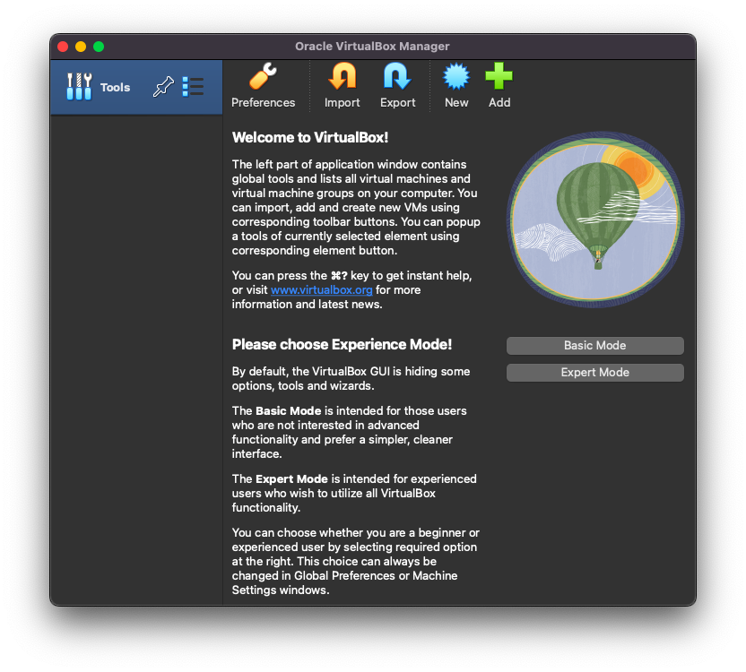
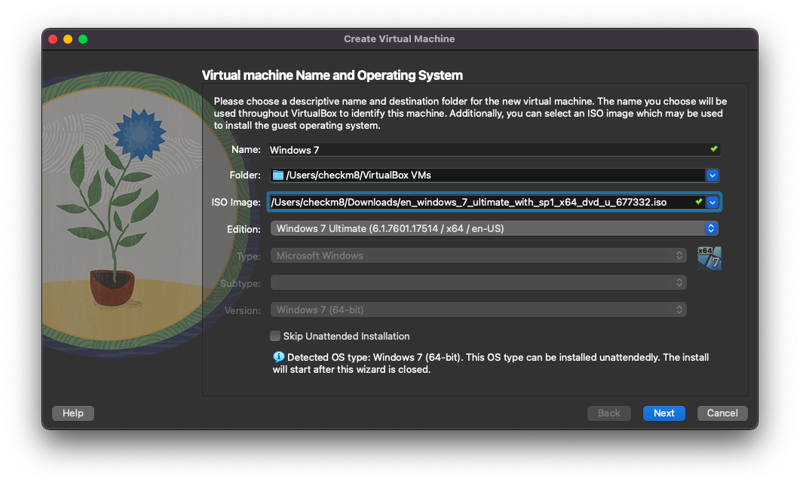
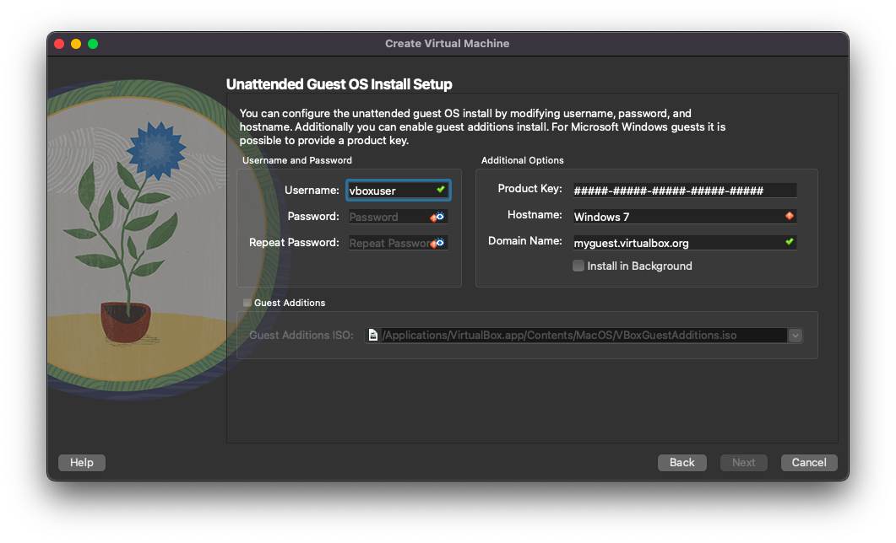
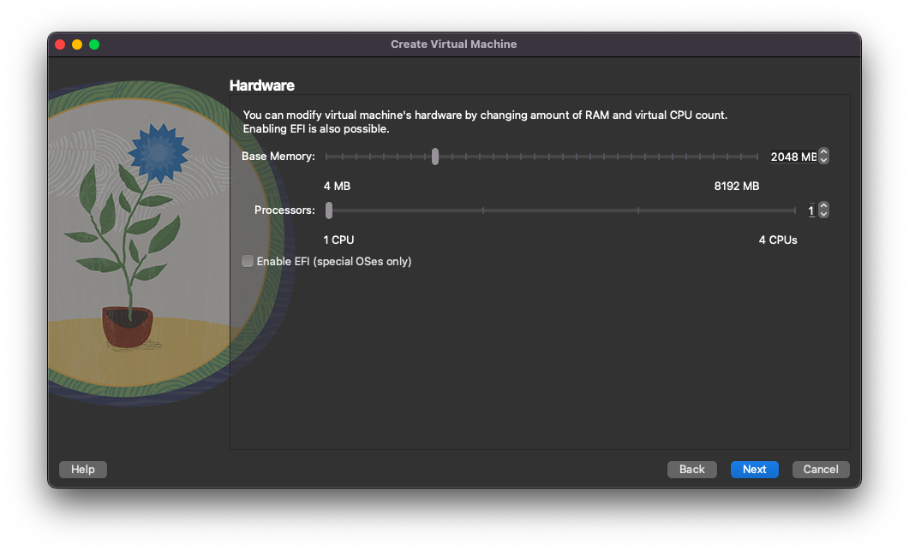
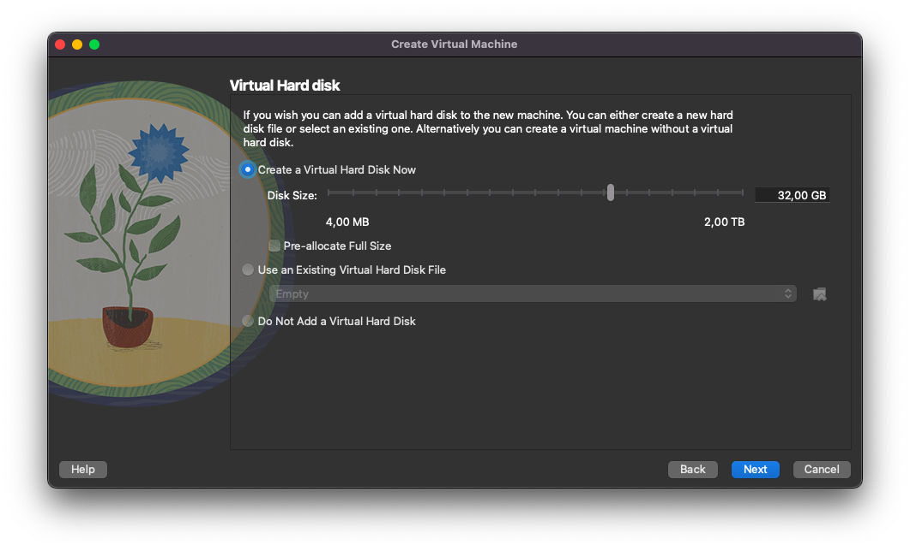

VirtualBox
VirtualBox is an open-source Virtual Machine software, developed by Oracle Corporation, the same of the Java Programming Language.
It's considered the competitor of VMWare; in fact as featues, it is very similar to VMWare, but it is free and open-source.
Price: Free
Avaible Platforms:


How to make VM

First click on New Button

Here you can set the name of the VM (tip: if you type the OS name, will automatically set the OS; ex: if you type Windows 7, will automatically set Windows 7)
You can set the VM destination folder, default is Your home folder -> VirtualBox VMs
You can set the edition of your Windows (if you'd like to make a Windows VM and to use the Unattended Installation)
Under the windows there's a checkbox for the Unattended Installation, that is for automatically configure the OS installation
I personally don't use use it, but you can use it if you want.

If you choosed to use the Unattended Installation, here you can set the username, the password, the product key

After that you have the set the amount of GBs of RAM, the cores of the CPU and enable UEFI

Now you can make the virual disk, setting the amount of GBs